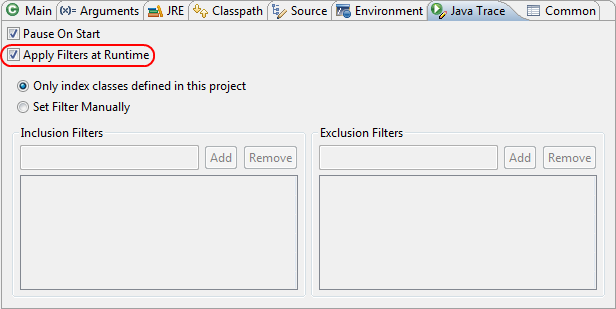
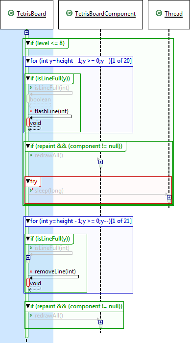
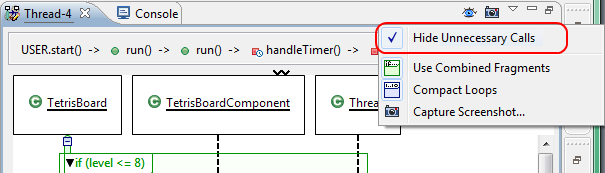
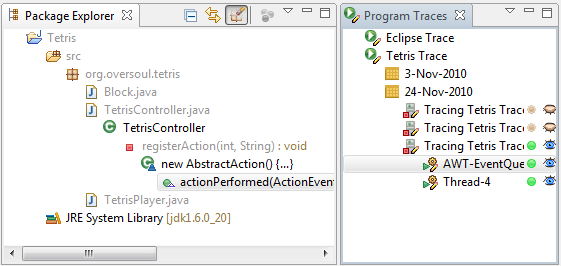

| Runtime Filtering |

Previous versions of Diver traced all interactions during the
execution of your program. With Diver 0.3, it is now possible to
apply class and package filters at runtime. This will decrease
the size of your traces and increase the responsiveness of your
running software, and significantly decrease the amount of time
that it takes Diver to analyze the trace after you have finished
the trace. However, it will also increase the memory consumption
of the the program that you are tracing. Also, Diver's
"Reanalyze Trace" feature will not be as effective.
|
| Sequence Diagram Filtering |
You can now apply the filters from the Program Traces View to the Thread Sequence View.
There is now an "eye" icon visible in the
sequence diagram view. Close the eye to apply they filter. The default application of this
action is to "grey out" method calls that are "unnecessary" according to
the filters that you have defined in the Program Traces View:

Use the Hide Unnecessary Calls action from the Thread Sequence View's menu to hide
the method calls altogether:


A video about this new
feature is featured on Youtube.
Note that this feature will not work on your current traces until after you reanalyze
them. See the documentation
for more information. |
| Package Explorer Coloring |
The package explorer filters in Diver work not only for an entire
trace, but for the selected thread as well. That is, if you select a
thread in the active trace, then only the methods invoked
by that thread are visible within the package explorer. In previous
versions, this could cause some confusion with respect to methods
called from anonymous inner classes. For example, the method
A.parent() might declare an anonymous inner class called
A$1 with the method child(). Now, in the
package explorer, A$1.child() is shown as a child of
A.parent(), but it may be the case that
A$1.child() is never called in the same thread as
A.parent(). Diver handled this problem in previous versions
by displaying A.parent() even if it is not called
in the currently selected thread. Diver 0.3.0 attempts to alleviate
the confusion caused by this scenario by using colors in the package
explorer. If an element (package, java file, class, method) is not
executed in the selected thread, but one of its descendents (method,
inner class, etc.) is, then that element is colored in grey:

|